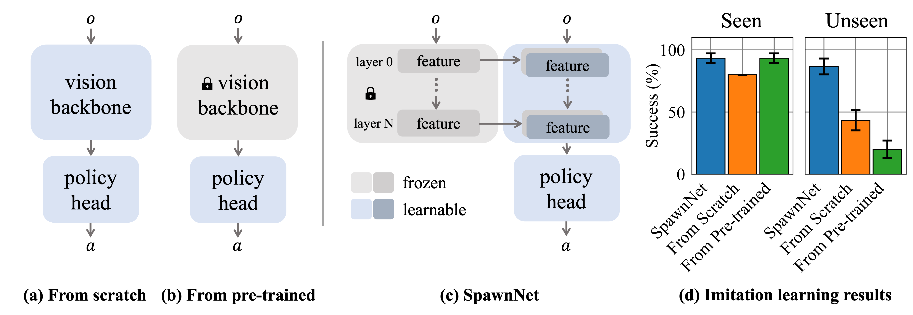

Abstract
The existing internet-scale image and video datasets cover a wide range of everyday objects and tasks, which brings the potential of learning visuomotor skills that can generalize in diverse situations using pre-trained representations. Prior works have explored different datasets and self-supervised objectives to approach this goal, but the power of pre-training has not yet been demonstrated in the generalization perspective across unseen instances and situations. In this work, we put this challenge on the table, focusing on how pre-trained representations can help the generalization of the learned skills. We first identify the key bottleneck in using a frozen pre-trained visual backbone for policy learning. We then propose SpawnNet, a novel two-stream architecture that learns to fuse pre-trained multi-layer representations into a separate network to learn a robust policy. Through extensive simulated and real experiments, we demonstrate significantly better categorical generalization compared to prior approaches in imitation learning settings.
Method
Tasks and Performance

Sim Task Rollouts
We depict the training instances on the left and held out instances on the right. A green border appears around an instance once the agent successfully completes the task. Each video is a unique instance.
Open Door
We train on 20 different instances and evaluate on 8 hold out instances. The policy must learn to open doors that open either leftward or rightward in varying positions.
Open Drawer
We train on 21 different instances and evaluate on 12 hold out instances. The policy must learn to open drawers at different heights.
Real World Task Rollouts
We depict the training instances on the left and the held out instances on the right. We also display both the wrist and base camera views; for each row of two stacked images, the top is the wrist view and the bottom is the base view. For these experiments, the policy only has access to RGB images (i.e. no depth and no proprioception). Each video is a unique instance.
Place Bag
The bag's position, rotation, and height are varied. We train on 3 bags and evaluate on 6 hold out bags. Bags vary significantly in shape, color, and geometry of the handle.
Hang Hat
The hat's rotation and position are slightly varied. We train on 3 hats and evaluate on 6 hold out hats. Hats vary in color and shape of the brim; they also deform slightly during the task.
Tidy Tools
The tool's position and rotation are varied. The drawer's position and rotation are also varied. We train on 6 drawers and evaluate on 7 hold out drawers. Here, drawers vary drastically in the geometry and color.
Visualization: what features are we attending to?
We visualize the spatial features extracted during the Place-Bag task. These features are extracted by 3 adapters, over layers 5, 8, and 11 of the DINO-ViT S/8 pretrained network.
A single rollout's visualization is a 2x4 grid; the first stacked row is the train instances, and the bottom 2 stacked rows are the hold out instances. The 4 columns are an RGB frame followed by the spatial norms of activated feature maps outputted by the 3 adapter layers. Each rollout's 2x4 grid is separated from the other rollouts by the thick black border.
Note that the features are consistent across instances. For example, when grasping all bags, the attention focuses on the handle. This occurs in even bags that are unseen during training.
Visualizations are recorded at 5 FPS, consistent with the policy's control frequency.